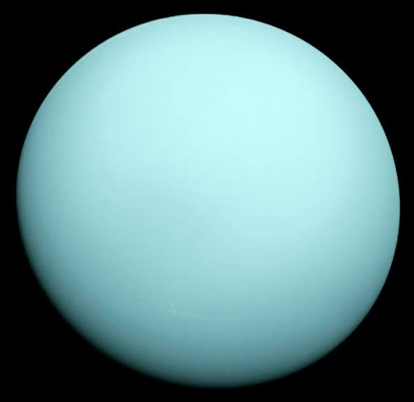

Urano se caracteriza por ser un planeta muy frío porque estar alejado del Sol.
Su eje de rotación está muy inclinado, y se ve de color azulado por los gases
que forman su superficie.
Urano también tiene un sistema de anillos y unos cuantos satélites naturales
entre los que se encuentran Titania, Oberón y Miranda.
Su nombre es en honor a Urano, dios romano del cielo.
